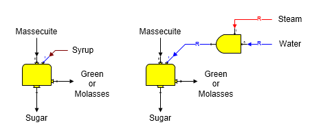
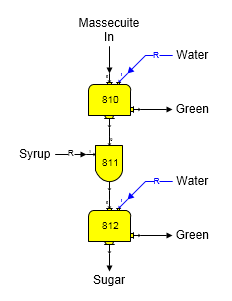

Wash flow into a centrifugal station can be water, syrup, or a combination of water and steam, or syrup and steam. The diagrams below show syrup wash and water with steam wash for a two output (continuous) centrifugal. The ratio between the steam and water (or syrup) can be controlled in a blender station, as shown below, when a combination of steam and water (or steam and syrup) is used. The wash flow into the centrifugal is always required (small 'R' on flow line); therefore, when a blender station is used to blend steam with the wash flow, the primary flow into the blender will also be made required. That is, the quantity of steam and water (or syrup) to the centrifugal will be controlled by the requirements of the centrifugal station as determined by the centrifugal performance evaluation.

Any output flow from a centrifugal can be required, but not more than one. Sugars will give an error message if a model is constructed that causes more than one output flow to be a required flow. This would cause the model to be over constrained and therefore not solvable. The massecuite flow into the centrifugal will be required if an output flow from the centrifugal is required. The figure above on the left shows a 2-Output centrifugal with the sugar flow out required and the figure on the right shows a 3-Output centrifugal with the green (or molasses) flow out required (small 'R' on these flow lines). In both cases, the massecuite flow into the centrifugal is a required flow (small 'R' on flow line). The wash flow into the centrifugal is always required.
Two centrifugals can be used in series to simulate the operation of a double continuous centrifugal. The diagram below shows a model of a double continuous centrifugal that uses two continuous (2-Output) centrifugals. The performance of each individual centrifugal is adjusted to give the same performance as the double centrifugal. Syrup is mingled with the sugar going from the first centrifugal (station no. 810), using a blender station (no. 811), before it is fed to the second centrifugal (station no. 812). In this example, a blender station is used to mingle syrup with the sugar from the 1st centrifugal so that melting of sucrose crystals will occur; however, if crystal melting does not occur, a receiver station could be used in place of the blender station. A blender station allows the quantity of syrup used for mingling to be a ratio to the sugar, or to give a percent dry substance, or purity, in the mingled flow. Sucrose crystals melt until the flow out of the blender is saturated with sucrose; that is, crystals will melt until the supersaturation equals 1.0 for the flow going from the blender to the 2nd centrifugal. No crystals will melt when either a blender, or receiver, is used if the syrup into the blender is at saturated conditions.

Double centrifugals are evaluated as two individual centrifugals. Performance data is entered for both centrifugals; however, data covering the properties of the sugar flow leaving the 1st centrifugal (station no. 810) is not always easy to obtain. If this data is not available, trial-and-error may be necessary until the performance of the model matches with the performance of the actual double centrifugal when the centrifugal performance evaluations are done. Editing the performance parameters for each centrifugal, as shown in the 2-Output Centrifugal Evaluation, can help to arrive at the proper values that match with the actual performance of the double centrifugal.
Solubility coefficients and color for each of the output flows from a centrifugal will be the result of the amount of wash flow in and mother liquor in the massecuite that flow out each output flow. If the wash flow in does not contain any non-sucrose components, the solubility coefficients for each output flow will be the same as the massecuite flow into the centrifugal; however, if the wash flow in is a syrup with non-sucrose components, the solubility coefficients for the output flows will be a weight-weighted average of the amount of wash and mother liquor in each output flow and their respective solubility coefficients. The color of each output flow will be dependent on the concentration of mother liquor, wash flow in and sucrose (crystalline or dissolved) in each output flow and the color of each of these components that make up the output flow.
Any gas components in either the wash flow in, or the massecuite, will pass to the green, or molasses. Water vapor in the massecuite, or wash flow in, will condense if the temperature of the massecuite and/or wash flow in is less than the saturation temperature for vapor. Also, if the massecuite does not contain any sucrose crystals, all of the massecuite and wash flow in will go to the molasses flow out. None will go to the wash, or sugar, flows out.